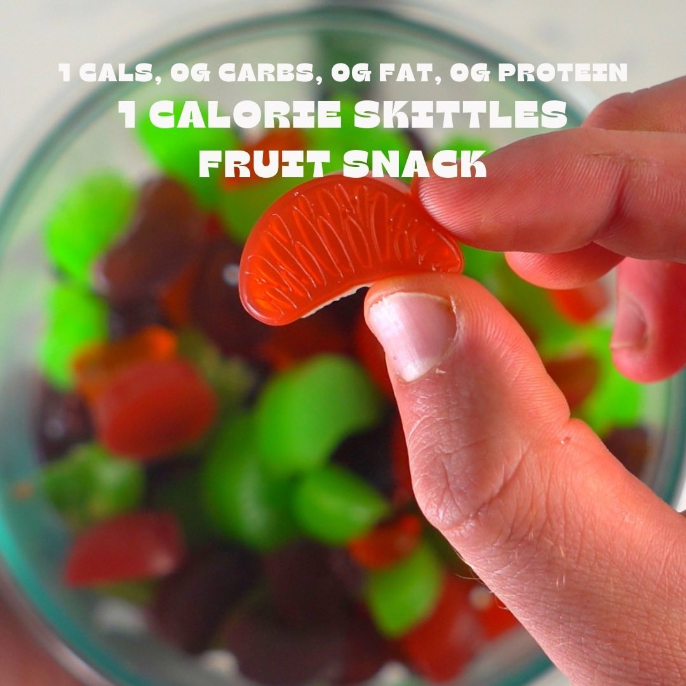

Skittles Fruta
Ingredientes:
- 360mL o 1.5 tazas de agua
- 28 g o aproximadamente 2/3 de taza de gelatina
- 2 sobres de mezcla de bebida Skittles sin azúcar
Instrucciones:
- Precalienta la estufa a fuego medio con una olla.
- Agrega 360mL o 1.5 tazas de agua y deja que hierva a fuego medio.
- Toma un bol para mezclar. Añade el agua hervida y los ingredientes para el sabor. Mezcla bien (yo
usé un espumador de leche para revolver).
- Usa un gotero o cuchara y vierte el líquido con sabor en moldes de snacks de frutas.
- Refrigera durante 1+ horas hasta que se solidifiquen. ¡Luego disfruta!